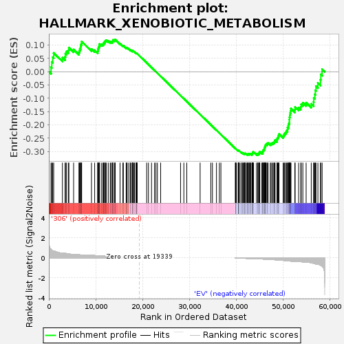

| | | Dataset | 306_EV_express.306_EV.cls#306_versus_EV |
| Phenotype | 306_EV.cls#306_versus_EV |
| Upregulated in class | EV |
| GeneSet | HALLMARK_XENOBIOTIC_METABOLISM |
| Enrichment Score (ES) | -0.31396493 |
| Normalized Enrichment Score (NES) | -1.0241346 |
| Nominal p-value | 0.37436762 |
| FDR q-value | 0.7608235 |
| FWER p-Value | 1.0 |
Table: GSEA Results Summary

Fig 1: Enrichment plot: HALLMARK_XENOBIOTIC_METABOLISM
Profile of the Running ES Score & Positions of GeneSet Members on the Rank Ordered List
| SYMBOL | TITLE | RANK IN GENE LIST | RANK METRIC SCORE | RUNNING ES | CORE ENRICHMENT | | 1 | DDC | NNN | 461 | 0.843 | 0.0168 | No |
| 2 | FMO3 | NNN | 627 | 0.777 | 0.0367 | No |
| 3 | CES1 | NNN | 826 | 0.712 | 0.0542 | No |
| 4 | ARG1 | NNN | 1034 | 0.674 | 0.0704 | No |
| 5 | AQP9 | NNN | 2896 | 0.472 | 0.0525 | No |
| 6 | GNMT | NNN | 3455 | 0.454 | 0.0563 | No |
| 7 | CYP26A1 | NNN | 3534 | 0.444 | 0.0679 | No |
| 8 | CYP1A2 | NNN | 3773 | 0.425 | 0.0763 | No |
| 9 | IGFBP1 | NNN | 4167 | 0.393 | 0.0811 | No |
| 10 | XDH | NNN | 4274 | 0.384 | 0.0906 | No |
| 11 | EPHX1 | NNN | 5280 | 0.335 | 0.0832 | No |
| 12 | PTGR1 | NNN | 6417 | 0.307 | 0.0728 | No |
| 13 | ACOX2 | NNN | 6525 | 0.302 | 0.0799 | No |
| 14 | ETS2 | NNN | 6629 | 0.297 | 0.0868 | No |
| 15 | ENPEP | NNN | 6794 | 0.286 | 0.0924 | No |
| 16 | CYP17A1 | NNN | 6812 | 0.285 | 0.1004 | No |
| 17 | HGFAC | NNN | 6935 | 0.278 | 0.1065 | No |
| 18 | IGF1 | NNN | 6998 | 0.275 | 0.1135 | No |
| 19 | HES6 | NNN | 9091 | 0.257 | 0.0853 | No |
| 20 | AKR1C3 | NNN | 9769 | 0.231 | 0.0806 | No |
| 21 | PROS1 | NNN | 10411 | 0.207 | 0.0757 | No |
| 22 | SLC46A3 | NNN | 10459 | 0.205 | 0.0809 | No |
| 23 | GAD1 | NNN | 10533 | 0.202 | 0.0856 | No |
| 24 | SERPINE1 | NNN | 10581 | 0.200 | 0.0906 | No |
| 25 | HNF4A | NNN | 10703 | 0.196 | 0.0943 | No |
| 26 | GABARAPL1 | NNN | 10744 | 0.195 | 0.0993 | No |
| 27 | F10 | NNN | 10795 | 0.193 | 0.1041 | No |
| 28 | TPST1 | NNN | 11185 | 0.186 | 0.1030 | No |
| 29 | PDK4 | NNN | 11509 | 0.176 | 0.1026 | No |
| 30 | SERTAD1 | NNN | 11675 | 0.170 | 0.1048 | No |
| 31 | ITIH1 | NNN | 11717 | 0.168 | 0.1090 | No |
| 32 | CFB | NNN | 11931 | 0.163 | 0.1101 | No |
| 33 | DHRS7 | NNN | 11951 | 0.162 | 0.1145 | No |
| 34 | DCXR | NNN | 12073 | 0.158 | 0.1171 | No |
| 35 | SHMT2 | NNN | 12284 | 0.152 | 0.1179 | No |
| 36 | CBR1 | NNN | 12674 | 0.142 | 0.1155 | No |
| 37 | ARG2 | NNN | 13096 | 0.131 | 0.1121 | No |
| 38 | ATOH8 | NNN | 13288 | 0.125 | 0.1125 | No |
| 39 | PYCR1 | NNN | 13551 | 0.119 | 0.1115 | No |
| 40 | TGFB2 | NNN | 13612 | 0.117 | 0.1140 | No |
| 41 | PINK1 | NNN | 13655 | 0.116 | 0.1166 | No |
| 42 | LPIN2 | NNN | 13677 | 0.115 | 0.1197 | No |
| 43 | TKFC | NNN | 14013 | 0.108 | 0.1171 | No |
| 44 | AP4B1 | NNN | 14138 | 0.105 | 0.1180 | No |
| 45 | SLC12A4 | NNN | 14141 | 0.104 | 0.1211 | No |
| 46 | F11 | NNN | 15183 | 0.082 | 0.1057 | No |
| 47 | MPP2 | NNN | 15789 | 0.072 | 0.0975 | No |
| 48 | ALAS1 | NNN | 15884 | 0.070 | 0.0980 | No |
| 49 | CSAD | NNN | 16491 | 0.062 | 0.0894 | No |
| 50 | FMO1 | NNN | 16559 | 0.061 | 0.0901 | No |
| 51 | CYP2J2 | NNN | 16624 | 0.059 | 0.0907 | No |
| 52 | NPC1 | NNN | 16917 | 0.052 | 0.0872 | No |
| 53 | GCLC | NNN | 17339 | 0.043 | 0.0813 | No |
| 54 | ACP2 | NNN | 17341 | 0.043 | 0.0826 | No |
| 55 | SLC35D1 | NNN | 17594 | 0.038 | 0.0794 | No |
| 56 | UPB1 | NNN | 17814 | 0.034 | 0.0766 | No |
| 57 | AHCY | NNN | 17845 | 0.033 | 0.0771 | No |
| 58 | LEAP2 | NNN | 17854 | 0.033 | 0.0779 | No |
| 59 | BCAR1 | NNN | 17861 | 0.033 | 0.0788 | No |
| 60 | ALDH2 | NNN | 17910 | 0.032 | 0.0789 | No |
| 61 | GSTT2 | NNN | 18151 | 0.028 | 0.0757 | No |
| 62 | PEMT | NNN | 18258 | 0.025 | 0.0746 | No |
| 63 | FAH | NNN | 18600 | 0.018 | 0.0693 | No |
| 64 | SLC6A6 | NNN | 18625 | 0.017 | 0.0694 | No |
| 65 | RAP1GAP | NNN | 18679 | 0.016 | 0.0690 | No |
| 66 | IGFBP4 | NNN | 18699 | 0.016 | 0.0691 | No |
| 67 | ELOVL5 | NNN | 18744 | 0.015 | 0.0688 | No |
| 68 | ALDH9A1 | NNN | 18755 | 0.015 | 0.0690 | No |
| 69 | ATP2A2 | NNN | 18833 | 0.013 | 0.0681 | No |
| 70 | GSTA3 | NNN | 20865 | 0.000 | 0.0335 | No |
| 71 | VNN1 | NNN | 21238 | 0.000 | 0.0271 | No |
| 72 | CD36 | NNN | 21897 | 0.000 | 0.0159 | No |
| 73 | GSTM4 | NNN | 22534 | 0.000 | 0.0051 | No |
| 74 | CRP | NNN | 22828 | 0.000 | 0.0001 | No |
| 75 | HSD11B1 | NNN | 23144 | 0.000 | -0.0053 | No |
| 76 | REG1A | NNN | 23844 | 0.000 | -0.0172 | No |
| 77 | TYR | NNN | 28088 | 0.000 | -0.0896 | No |
| 78 | MBL2 | NNN | 28791 | 0.000 | -0.1016 | No |
| 79 | ABCD2 | NNN | 29413 | 0.000 | -0.1122 | No |
| 80 | CYP4F2 | NNN | 32263 | 0.000 | -0.1608 | No |
| 81 | AOX1 | NNN | 34543 | 0.000 | -0.1996 | No |
| 82 | HACL1 | NNN | 34886 | 0.000 | -0.2055 | No |
| 83 | FETUB | NNN | 35748 | 0.000 | -0.2201 | No |
| 84 | ADH7 | NNN | 36363 | 0.000 | -0.2306 | No |
| 85 | TDO2 | NNN | 36693 | 0.000 | -0.2362 | No |
| 86 | NINJ1 | NNN | 39781 | -0.002 | -0.2888 | No |
| 87 | GART | NNN | 39811 | -0.003 | -0.2892 | No |
| 88 | FBP1 | NNN | 39821 | -0.003 | -0.2893 | No |
| 89 | CAT | NNN | 39834 | -0.003 | -0.2894 | No |
| 90 | ETFDH | NNN | 39984 | -0.007 | -0.2917 | No |
| 91 | EPHA2 | NNN | 40361 | -0.016 | -0.2977 | No |
| 92 | MCCC2 | NNN | 40422 | -0.017 | -0.2982 | No |
| 93 | PSMB10 | NNN | 40426 | -0.017 | -0.2977 | No |
| 94 | DHRS1 | NNN | 40438 | -0.018 | -0.2974 | No |
| 95 | TMEM97 | NNN | 40457 | -0.018 | -0.2972 | No |
| 96 | FAS | NNN | 40472 | -0.018 | -0.2969 | No |
| 97 | ENTPD5 | NNN | 40495 | -0.019 | -0.2967 | No |
| 98 | CA2 | NNN | 40526 | -0.020 | -0.2966 | No |
| 99 | RBP4 | NNN | 40795 | -0.025 | -0.3005 | No |
| 100 | APOE | NNN | 41134 | -0.032 | -0.3053 | No |
| 101 | ADH5 | NNN | 41163 | -0.033 | -0.3048 | No |
| 102 | UGDH | NNN | 41247 | -0.035 | -0.3052 | No |
| 103 | ACP1 | NNN | 41474 | -0.039 | -0.3079 | No |
| 104 | ID2 | NNN | 41481 | -0.039 | -0.3069 | No |
| 105 | POR | NNN | 41688 | -0.043 | -0.3092 | No |
| 106 | LONP1 | NNN | 41703 | -0.044 | -0.3081 | No |
| 107 | CYFIP2 | NNN | 41778 | -0.046 | -0.3080 | No |
| 108 | CNDP2 | NNN | 41825 | -0.047 | -0.3075 | No |
| 109 | PGD | NNN | 41901 | -0.048 | -0.3073 | No |
| 110 | MAOA | NNN | 42154 | -0.053 | -0.3101 | No |
| 111 | ARPP19 | NNN | 42280 | -0.056 | -0.3106 | No |
| 112 | TNFRSF1A | NNN | 42381 | -0.058 | -0.3106 | No |
| 113 | NMT1 | NNN | 42475 | -0.060 | -0.3104 | No |
| 114 | GCH1 | NNN | 42489 | -0.060 | -0.3089 | No |
| 115 | TMEM176B | NNN | 42676 | -0.064 | -0.3102 | No |
| 116 | GCNT2 | NNN | 42795 | -0.067 | -0.3102 | No |
| 117 | COMT | NNN | 42859 | -0.068 | -0.3093 | No |
| 118 | SLC35B1 | NNN | 43012 | -0.071 | -0.3098 | No |
| 119 | GCKR | NNN | 43081 | -0.073 | -0.3088 | No |
| 120 | ACO2 | NNN | 43326 | -0.079 | -0.3107 | No |
| 121 | PGRMC1 | NNN | 43340 | -0.079 | -0.3086 | No |
| 122 | PPARD | NNN | 43404 | -0.080 | -0.3073 | No |
| 123 | MAN1A1 | NNN | 43480 | -0.082 | -0.3062 | No |
| 124 | SSR3 | NNN | 43501 | -0.083 | -0.3041 | No |
| 125 | SPINT2 | NNN | 43537 | -0.084 | -0.3023 | No |
| 126 | PDLIM5 | NNN | 43659 | -0.086 | -0.3018 | No |
| 127 | CYP2C18 | NNN | 44278 | -0.092 | -0.3096 | No |
| 128 | DDAH2 | NNN | 44532 | -0.093 | -0.3112 | Yes |
| 129 | CYP2E1 | NNN | 44542 | -0.094 | -0.3086 | Yes |
| 130 | RETSAT | NNN | 44730 | -0.098 | -0.3090 | Yes |
| 131 | MTHFD1 | NNN | 44850 | -0.101 | -0.3080 | Yes |
| 132 | TTPA | NNN | 44872 | -0.102 | -0.3054 | Yes |
| 133 | PC | NNN | 44893 | -0.102 | -0.3027 | Yes |
| 134 | ACOX3 | NNN | 44960 | -0.104 | -0.3008 | Yes |
| 135 | CYB5A | NNN | 45367 | -0.111 | -0.3045 | Yes |
| 136 | DHPS | NNN | 45603 | -0.117 | -0.3051 | Yes |
| 137 | FBLN1 | NNN | 45614 | -0.117 | -0.3018 | Yes |
| 138 | SLC1A5 | NNN | 45632 | -0.117 | -0.2987 | Yes |
| 139 | VTN | NNN | 45704 | -0.119 | -0.2964 | Yes |
| 140 | ECH1 | NNN | 45776 | -0.120 | -0.2941 | Yes |
| 141 | GSS | NNN | 45928 | -0.124 | -0.2930 | Yes |
| 142 | TMBIM6 | NNN | 45956 | -0.124 | -0.2898 | Yes |
| 143 | MT2A | NNN | 46002 | -0.126 | -0.2869 | Yes |
| 144 | GSR | NNN | 46037 | -0.126 | -0.2838 | Yes |
| 145 | SLC22A1 | NNN | 46120 | -0.129 | -0.2815 | Yes |
| 146 | ABCC3 | NNN | 46131 | -0.129 | -0.2778 | Yes |
| 147 | ABCC2 | NNN | 46243 | -0.132 | -0.2759 | Yes |
| 148 | LCAT | NNN | 46297 | -0.134 | -0.2728 | Yes |
| 149 | SERPINA6 | NNN | 46520 | -0.139 | -0.2725 | Yes |
| 150 | SAR1B | NNN | 46556 | -0.141 | -0.2690 | Yes |
| 151 | SMOX | NNN | 46766 | -0.147 | -0.2683 | Yes |
| 152 | ABHD6 | NNN | 47238 | -0.158 | -0.2717 | Yes |
| 153 | PTGES3 | NNN | 47379 | -0.163 | -0.2693 | Yes |
| 154 | GSTO1 | NNN | 47633 | -0.170 | -0.2686 | Yes |
| 155 | NFS1 | NNN | 47844 | -0.178 | -0.2670 | Yes |
| 156 | ACOX1 | NNN | 48041 | -0.183 | -0.2650 | Yes |
| 157 | JUP | NNN | 48141 | -0.186 | -0.2613 | Yes |
| 158 | CYP27A1 | NNN | 48249 | -0.189 | -0.2575 | Yes |
| 159 | PTS | NNN | 48655 | -0.206 | -0.2584 | Yes |
| 160 | PLG | NNN | 48679 | -0.207 | -0.2528 | Yes |
| 161 | HPRT1 | NNN | 48771 | -0.209 | -0.2482 | Yes |
| 162 | ALDH3A1 | NNN | 48947 | -0.217 | -0.2448 | Yes |
| 163 | NQO1 | NNN | 48992 | -0.220 | -0.2391 | Yes |
| 164 | IDH1 | NNN | 49086 | -0.223 | -0.2342 | Yes |
| 165 | PMM1 | NNN | 49964 | -0.249 | -0.2419 | Yes |
| 166 | BPHL | NNN | 50151 | -0.255 | -0.2375 | Yes |
| 167 | ESR1 | NNN | 50279 | -0.263 | -0.2320 | Yes |
| 168 | BLVRB | NNN | 50498 | -0.275 | -0.2277 | Yes |
| 169 | BCAT1 | NNN | 50661 | -0.283 | -0.2222 | Yes |
| 170 | ANGPTL3 | NNN | 50885 | -0.293 | -0.2174 | Yes |
| 171 | CROT | NNN | 50914 | -0.294 | -0.2093 | Yes |
| 172 | CASP6 | NNN | 51079 | -0.302 | -0.2032 | Yes |
| 173 | AKR1C2 | NNN | 51151 | -0.305 | -0.1955 | Yes |
| 174 | ITIH4 | NNN | 51301 | -0.308 | -0.1891 | Yes |
| 175 | PTGES | NNN | 51304 | -0.308 | -0.1801 | Yes |
| 176 | CDO1 | NNN | 51317 | -0.309 | -0.1713 | Yes |
| 177 | KYNU | NNN | 51404 | -0.316 | -0.1635 | Yes |
| 178 | UPP1 | NNN | 51473 | -0.321 | -0.1552 | Yes |
| 179 | ASL | NNN | 51553 | -0.325 | -0.1471 | Yes |
| 180 | HMOX1 | NNN | 51639 | -0.329 | -0.1389 | Yes |
| 181 | HRG | NNN | 52473 | -0.357 | -0.1426 | Yes |
| 182 | ADH1C | NNN | 52514 | -0.357 | -0.1329 | Yes |
| 183 | ACSM1 | NNN | 53269 | -0.357 | -0.1353 | Yes |
| 184 | FABP1 | NNN | 53724 | -0.371 | -0.1322 | Yes |
| 185 | NDRG2 | NNN | 53828 | -0.380 | -0.1228 | Yes |
| 186 | CYP1A1 | NNN | 54169 | -0.405 | -0.1167 | Yes |
| 187 | CYP2S1 | NNN | 54869 | -0.419 | -0.1164 | Yes |
| 188 | PTGDS | NNN | 55961 | -0.480 | -0.1209 | Yes |
| 189 | DDT | NNN | 56460 | -0.538 | -0.1137 | Yes |
| 190 | CCL25 | NNN | 56507 | -0.546 | -0.0985 | Yes |
| 191 | HSD17B2 | NNN | 56714 | -0.572 | -0.0852 | Yes |
| 192 | PAPSS2 | NNN | 56841 | -0.592 | -0.0701 | Yes |
| 193 | CDA | NNN | 56968 | -0.613 | -0.0543 | Yes |
| 194 | IRF8 | NNN | 57379 | -0.643 | -0.0424 | Yes |
| 195 | TAT | NNN | 57928 | -0.728 | -0.0305 | Yes |
| 196 | IL1R1 | NNN | 58002 | -0.738 | -0.0101 | Yes |
| 197 | SLC6A12 | NNN | 58282 | -0.826 | 0.0093 | Yes |
Table: GSEA details [plain text format]
Fig 2: HALLMARK_XENOBIOTIC_METABOLISM
Blue-Pink O' Gram in the Space of the Analyzed GeneSet
Fig 3: HALLMARK_XENOBIOTIC_METABOLISM: Random ES distribution
Gene set null distribution of ES for HALLMARK_XENOBIOTIC_METABOLISM